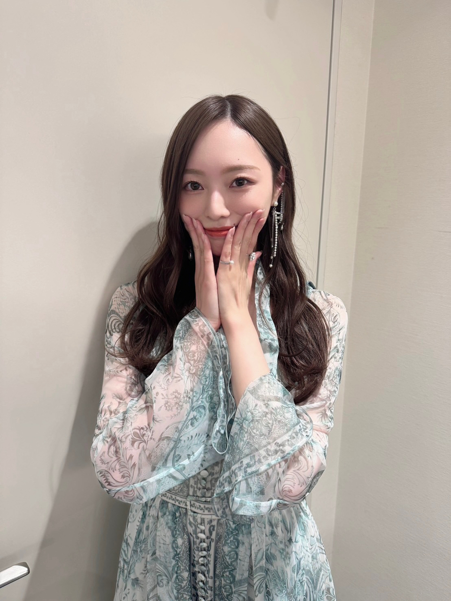
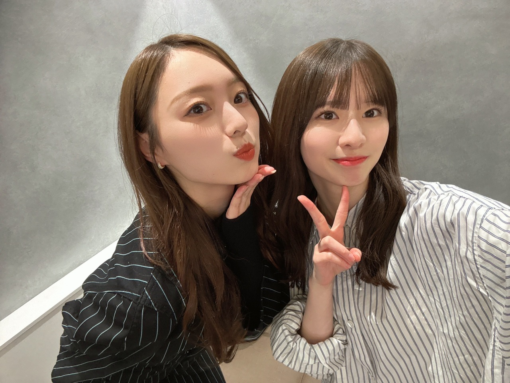
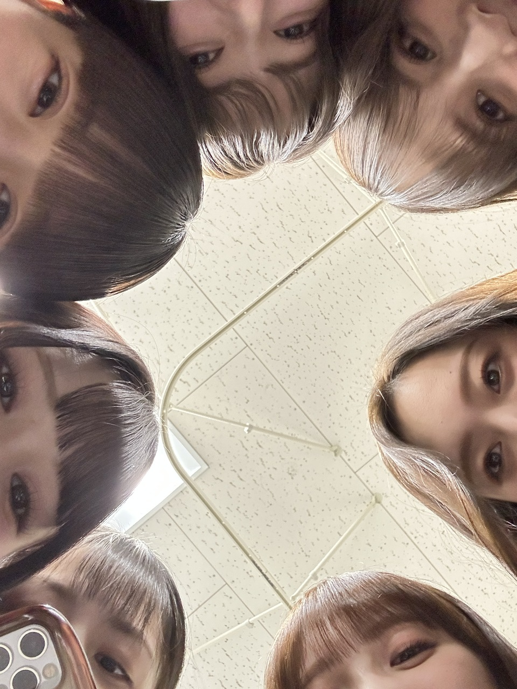
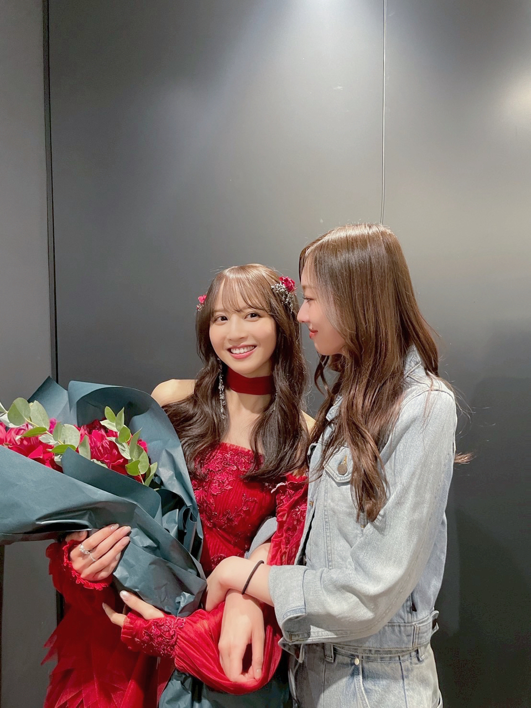
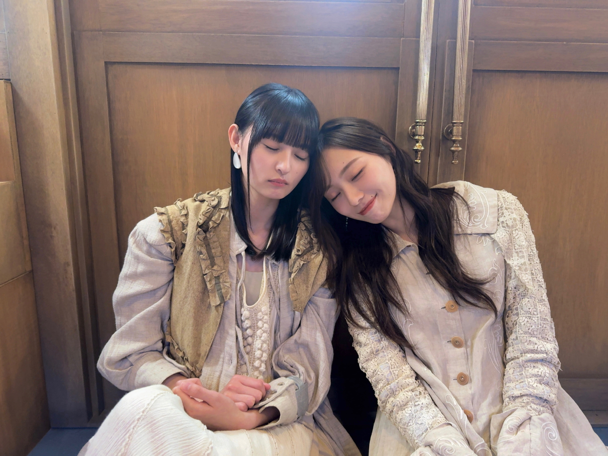

傘になるよ
みなさま、こんにちは
梅澤美波です。
お久しぶりになってしまいました。
いかがお過ごしですか？

ネーブルオレンジ
さて、何から話そう！！
だいぶ時間が経ってしまいましたが、まずは
６期生初披露の会
ありがとうございました！
菅原咲月とふたりで
MCを務めました。
出番直前まで 2人きりの楽屋で
細かく打ち合わせして、練り合わせて、挑みました！

我ながら、いいコンビ(^^)
だって、当日、合わせてもないのに
同じ柄着てきちゃうんだから。
通しリハーサルから見させてもらって、
あまりの初々しさに
きゅんきゅんしながら見守っていましたが
初ステージ、どんなに準備しても
拭えない不安がもちろん出てくるけど
その不安はみんなで支え合って、補って、
涙は誰かが拭いてあげて
ステージへ上がれば
ちゃんと乃木坂の子になっていて(^^)
ああ、これがわたしが見てきた
だいすきな乃木坂だ〜。
みんな、なるべくして
ここに来てくれたんだな、と感じさせてくれて
新生乃木坂ちゃん、いよいよだ、と
わくわくしました。
みんな、乃木坂への愛をちゃんと持ってくれていて
それだけで嬉しいです。
改めて、乃木坂へ来てくれて、ありがとう(^^)
そして、お披露目会を同じく経験してきた私たちからすれば
ファンの皆様からの温かい歓声や視線が
なによりも、心強いんです！
みんな、安心できたはず。
客席から応援してくださった皆様、
色んな場所から心を寄せてくださった皆様、
本当にありがとうございました(^^)
急ピッチで色々求められる今は
とても大変かもしれないけど
じっくり、ゆっくり
乃木坂になれたことへの誇りと自信を
ちゃんと感じられる時間が、
みんなにありますように。
自分をたくさん、褒めてあげてほしいです！

与田の卒コンの時の、
だーーーーーいすきな写真！
下からアングルすぎて怒られちゃうかしら。
乃木坂を一番に大切にしてきたよ！私たちは！
もう、誰がゴールへ向かっているかなんて
聞かなくても分かります
その日のコンディションだって 、
会った瞬間に分かりすぎてしまうくらいには
苦楽を共に過ごしてきたので(^^)
気づけば輪がどんどん小さくなって
寂しくて寂しくてたまらないけど
ここにいながら
みんなを見送ることができるのは、
なによりも幸せ。
なんてったって、ここを去る日のみんなが
一番美しいから！特等席で見送れる！幸せ！
みんながこんなに尽くしてきてくれた乃木坂へ
私はここにいる身として
もっとやるべき事があるなと思わせてくれるし
寂しさをみんなで埋めあうと、
より深く強くなります(^^)
あとは、
みんなが最後に残す言葉を聞くのも大好き。
やり切った表情で
清々しく前を向いて放つ言葉が、一番 沁みる。
とっても切なくなるんだけどね〜

どんな時も、隣にいてくれました(^^)
仲が良すぎて
面と向かって真面目な話をするのは照れくさい時もあったけど
私たちは、互いにちゃんと話して
一緒にたくさん泣いてきた！
これからも、ずっと お友だよ
楓の好きな乃木坂、守ります！
みんな、幸せでいてね！！！
ミュージカル「梨泰院クラス」
本番まで１ヶ月を切りました！
あっという間、、、
世界初演。
一から作り上げる作業はこんなにも大変なのかと思いつつ
役と向き合い頭を悩ませる日々に
とても生きがいを感じています。
メッセージが強く込められた作品だからこそ
ちゃんと皆様にパワーを届けられるように、頑張ります。
スアのように、強く生きるぞ〜！
この間のリアミで
チケットゲットしたよ〜というお声をたくさんいただいて。
嬉しかったです。
私の挑戦、皆様が見守っていてくれるのなら
怖がらずに頑張れそう！
本当にありがとうございます！
楽しみに待っていてね。
そしてそして
初めて立つ味の素スタジアム、
どんな景色なのか 、早くみたいです(^^)
色んな気づきをもらっています。
今回ももちろん 気持ちも体力も 想像以上に必要で
それなりに準備と勢いが必要だから
あとは自分の気持ちを、自分で高めるのみ(^^)
本番は、みんなでとにかく楽みます！
楽しみ！とっても、楽しみ！
キラキラしてて、いっちばん好き！
今年も 色んな思い出と未来が交差する２日間、
みんなではっちゃけようね(^^)

こつん
雨予報？だけど、
まだ予報だから、大丈夫！
わたし、晴れ女！
雨が降ったとしても、
皆様色々準備して、お越しくださいませ。
配信で見守っていてくれる方も
パワーとどけますね！！
それでは。
また、書きます！
Original：https://www.nogizaka46.com/s/n46/diary/detail/103436?ima=4930&cd=MEMBER